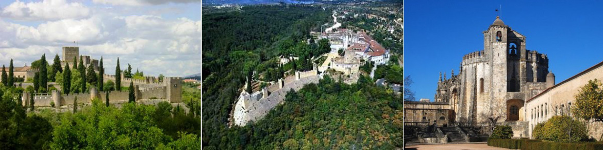

Os 10 castelos mais bonitos de Portugal
Castelo de Santa Maria da Feira (Norte)

Por estar na região onde nasceu o Reino de Portugal é um castelo de grande importância histórica e considerado um dos exemplos mais notáveis da arquitectura militar medieval. As importantes obras de restauração nos anos 40 devolveram a dignidade que sempre mereceu. Por estar envolto por um parque com árvores centenárias que coexiste harmoniosamente com as muralhas medievais, os quatro imponentes torreões parecem erguerem-se altaneiros do meio da floresta. No interior há uma extensa praça com um gramado muito bem cuidado. Não deixe de visitar a Quinta do Castelo que fica mesmo junto a muralha e apresenta muitas atracções, como uma ponte e uma gruta que remetem a Gaudí.
Castelo de Guimarães (Norte)

Muitos cometem o pecado de vir a Portugal e não conhecer a simpática vila onde nasceu o Reino de Portugal. O castelo foi construído no século X pela Condessa Mumadona (e não por Dom Afonso Henriques como muitos acreditam) para proteger o mosteiro que era frequentemente atacado pelos Mouros. Após as merecidas obras de restauração, mostra-se imponente e com toda importância que teve outrora quando foi palco de façanhas históricas e heróicas. O Paço dos Duques de Bragança, que fica mesmo ao lado do castelo é simplesmente belo. O centro histórico de Guimarães está repleto de atracções interessantes, como as praças, capelas, conventos, igrejas e casa senhoriais. Imperdível!
Castelo de Porto de Mós (Centro)
Envolto pela bela paisagem da Serra D´Aire e localizado numa região repleta de monumentos históricos, como o Castelo de Ourém, o Convento de Cristo em Tomar, o Santuário de Fátima e os Mosteiros de Alcobaça e da Batalha, este castelo apresenta uma arquitectura muito mais palaciana do que propriamente militar. Apresenta alguns elementos renascentistas, mas as evidências mais fortes são as góticas quatrocentistas que estão bem evidentes na fachada sul.
Na fachada principal, o amplo portal acompanhado por duas imponentes torres encimadas por coruchéus piramidais de placas de cerâmicas verdes conferem um estilo único a esta fortaleza. Conta ainda com uma ampla varanda com janelas repletas de detalhes que complementam a boa vista que se tem da região.
Sofreu danos consideráveis após o terremoto de 1755 e foi recuperado na década de 70 após ser inserido no selecto grupo dos “Monumentos Nacionais de Portugal”.
Castelo de Tomar (Centro)

Muitos cometem o pecado de vir a Portugal e não conhecer a simpática vila onde nasceu o Reino de Portugal. O castelo foi construído no século X pela Condessa Mumadona (e não por Dom Afonso Henriques como muitos acreditam) para proteger o mosteiro que era frequentemente atacado pelos Mouros. Após as merecidas obras de restauração, mostra-se imponente e com toda importância que teve outrora quando foi palco de façanhas históricas e heróicas. O Paço dos Duques de Bragança, que fica mesmo ao lado do castelo é simplesmente belo. O centro histórico de Guimarães está repleto de atracções interessantes, como as praças, capelas, conventos, igrejas e casa senhoriais. Imperdível!
Castelo de Almourol (Centro)
Muitos cometem o pecado de vir a Portugal e não conhecer a simpática vila onde nasceu o Reino de Portugal. O castelo foi construído no século X pela Condessa Mumadona (e não por Dom Afonso Henriques como muitos acreditam) para proteger o mosteiro que era frequentemente atacado pelos Mouros. Após as merecidas obras de restauração, mostra-se imponente e com toda importância que teve outrora quando foi palco de façanhas históricas e heróicas. O Paço dos Duques de Bragança, que fica mesmo ao lado do castelo é simplesmente belo. O centro histórico de Guimarães está repleto de atracções interessantes, como as praças, capelas, conventos, igrejas e casa senhoriais. Imperdível!
Castelo de Óbidos (Centro)
Talvez seja a vila medieval mais famosa de Portugal. Não sei se pela proximidade de Lisboa (90km) ou pelo perfil empreendedor do prefeito que há muito tempo organiza diversos eventos durante o ano, passando pelo Festival do chocolate em Fevereiro, pelo Programa Religioso na Semana Santa, pelo Mercado Medieval em Junho e pela Vila Natal em Dezembro. Ou talvez seja mesmo pelo conjunto da obra. A verdade é que a vila é pequena, charmosa e repleta de atracções gastronómicas, artesanais e líquidas, como a famosa Ginginha de Óbidos servida no copo de chocolate. A caminhada pela muralha é muito prazerosa, pois de um lado você tem uma bela vista e de outro um vista panorâmica da vila e dos belos jardins das casas.
Castelo dos Mouros e Palácio da Pena (Centro)
Impossível de falar do Castelo dos Mouros sem falar do Palácio da Pena. São dois destinos que ficam muito próximos, na verdade é só tropeçar em um que você cai no outro. Localizados na deliciosa Serra de Sintra são dois dos principais monumentos de Portugal e que dispensam apresentações. Apenas ressalto que o Palácio da Pena é um dos 10 mais bonitos da Europa! Aproveite e visite também a Quinta da Regaleira, um oásis dentro do oásis que é esta serra. Não esquecendo que o centro histórico de Sintra é Património da Humanidade, um título mais do que merecido.
Castelo de Marvão (Alentejo)

Inserido no topo de uma das encostas da Serra de São Mamede, o castelo é uma pequena parte da vila que também está envolta por muralhas medievais. A vista é simplesmente magnífica e permite contemplar a amplitude da vasta planície do Alto Alentejo. As estreitas vielas de pedra com trânsito de veículos bastante condicionado e as pequenas casas bem conservadas proporcionam uma atmosfera medieval bastante aconchegante.
Castelo de Arraiolos (Alentejo)

Um dos poucos castelos circulares do mundo é destino obrigatório para quem for visitar o Alentejo, pois fica a apenas 15km de Évora. Por estar localizado no topo do monte de São Pedro, proporciona uma vista de 360 graus sobre a planície Alentejana. As edificações interiores estão um pouco desgastadas pelo tempo, o que é uma pena, mas as muralhas elipsoidais e o extenso gramado estão em óptimas condições.
Castelo de Monsaraz (Alentejo)

Localizado no topo do monte Monsaraz, o castelo também proporciona vistas espectaculares sobre a planície Alentejana. Mas este tem um detalhe especial: a proximidade com o grande lago do Alqueva, o maior lago artificial da Europa, o que colabora ainda mais para o frescor de nossos olhos. Reza a lenda que é uma das mais antigas vilas de Portugal, com indícios que remontam a épocas pré-históricas. As estreitas vielas de pedra, o trânsito de veículos bastante condicionado e as casas de paredes brancas repletas de flores compõem um cenário espectacular! As vistas que se tem de cada esquina desta tradicional e simpática vila são apaixonantes.